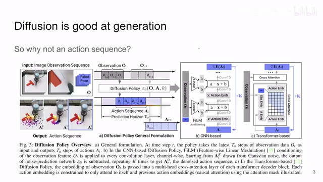
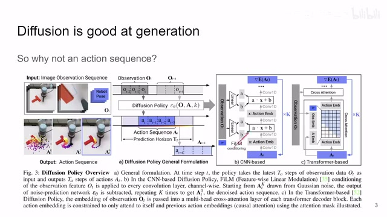
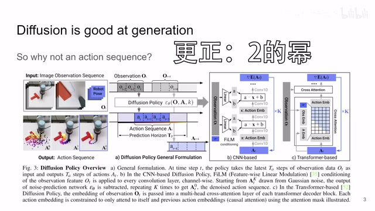
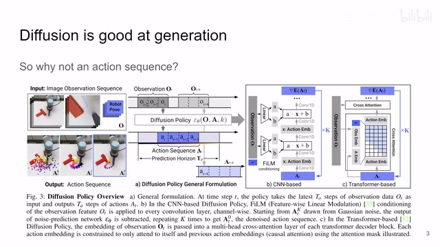
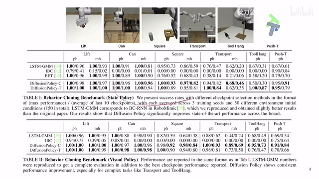
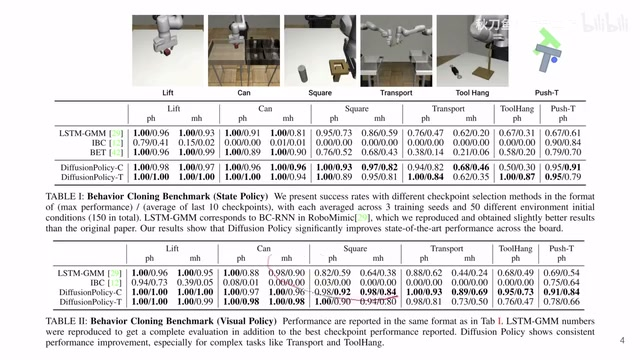
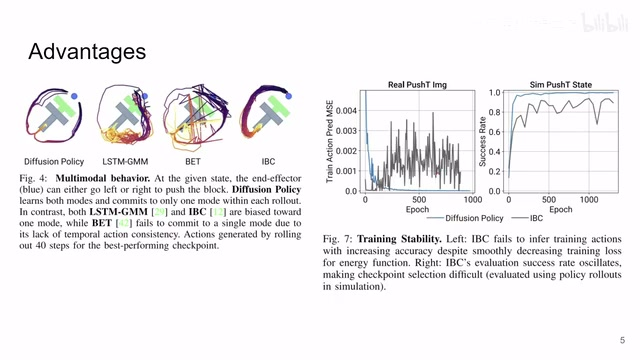
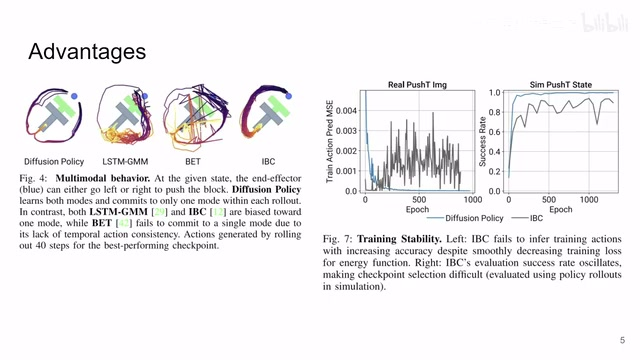

← 返回阅读库 · 原论文目录
论文讲解阅读文档 · 机器人学 · v130
Diffusion Policy Visuomotor Policy Learning via Action Diff.[2303.04137]
视频时长 00:05:49；讲解文字 2,911 字符；提取讲解画面 12 张。按视频原顺序阅读，每段文字保留时间戳。
文字来自整段视频的自动语音转写，按自然停顿分段，并与 PPT / 论文页面 / 演示画面对齐。未将讲解压缩为摘要；术语、数字和口述公式请结合画面及原论文核对。 阅读稿已校正规范部分明确术语误识别；原始逐字稿和每处修改记录另行保留。
讲解画面为源视频截图（640×360），不是可编辑 PPT 文件。全片按每秒 2 帧扫描内容变化，逐步展开页保留；连续动画保留代表画面。清晰度受源视频限制。
下载完整资料包 · 含离线 HTML、PDF、Word、全部 PPT 画面和字幕。
原论文与材料
Diffusion Policy: Visuomotor Policy Learning via Action Diffusion · 下载完整 PDF（19 页）
按时间阅读
00:00:00–00:00:17 · 画面 001
 00:00:00–00:00:17 · 画面 001
00:00:00–00:00:17 · 画面 001大家好,今天我们来快速说一篇论文 Diffusion Policy: Visuomotor Policy Learning via Action Diffusion 这篇论文就是用 Diffusion 这个模型去生成不是图像,不是像素而是说去生成一个 Action Sequence 来解决像 Behavior Cloning 这种 Policy Learning 的问题
00:00:17–00:02:17 · 画面 002

00:00:17–00:02:17 · 画面 002那我们之前介绍过 Diffusion 对吧？通过把原始的复杂的数据的 Diffusion 不断的加噪声变形，变到一个好的这个 Diffusion，然后一步一步的再给它反向的解回来，这样子呢能够生成一些样本是符合原来 Diffusion 的非常好的样本。那既然你像复杂的图片这种东西都能生成。假如说我把这个样本换成不是一张图像，而是说一个 action sequence，就是一系列的控制的指令交给机器人去做，那我是不是也可以用这种生成式的模型就把这个 policy 给它做出来呢？那当然是可以的。
但是呢，这个不能是随便做的，你一定要有备而来对吧？作为一个 policy 来讲，他肯定要看到一些 observation，然后才能做出相应的这个 action。所以你这个生成的过程必须是 condition observation，也就是说，也就是说，你要用你当前的收到的这个信息，比如说图像啊，各种传感器的数据啊等等这些 observation 这些 state，用它们来作为条件来控制这个 action 的生成的过程。
那本文的方法呢就很直接啊。我们之前说了用这一个 diffusion 生成的呢是 action sequence，就是你从一个很有噪声的这个 noisy 的这么一个 action sequence 不断的去迭代，迭代，迭代，最后呢模型处理之后呢生成一个好的这个 action sequence。那这里呢作者就试了有两种构架的这个 diffusion 模型，一种呢是基于 CNN 的，其实就是 U-Net 配上 residual block，那另一种呢是 transformer。那这里呢我们要关注的就是他怎么样把这个 condition 给他加进来。
那对于 CNN 的模型来说呢，这里呢作者用了这个 FiLM，也就是说，你的 observation 比如说最后提出来一些 feature，提出来一些 tensor 对吧？送到这个 linear layer 里面，这 linear layer 呢它预测两个值，一个是这个 scale，一个是这个 bias，用这个 scale 和 bias 这个 A 和 B 去调制你的这个 action embedding，也就是你 denoise 这个过程用它去调制，这样子呢来控制整个生成的过程。
你当然可以把它理解成为这是一种 attention 的机构，只不过呢这个 attention 呢来自于 web 的这个 observation。那对于 transformer 的更简单对吧？所有的东西大家都是一个个 token 嘛，然后呢 token 之间相互的做 crossattention 就好了。那注意这里呢作者的这个 action 呢同样可以和自己做这个 selfattention。
00:02:17–00:03:48 · 画面 003

00:02:17–00:03:48 · 画面 003你可以看到他把它放到这里了，只不过呢你在做 self attention 的时候对吧？自己不能和未来的这个 action 做 attention，所以你看到这里有这个 mask 来控制你这个做 self attention 的时候是个时序，那本质上都是你的 action token 和这个 observation token 做这个 cross attention，做出来一步一步的 transformer 走下去就好了，那么这个呢是作者的模型。
但是呢注意这里呢有一个很重要的设计就是看这个 condition 和这个 action 这个 observation 和这个 action 它的这个时序啊，我们看到呢它是拿前面几帧的 observation 啊我们在一起。送到这个 diffusion 里面作为一个 condition，然后 noise 进来输出，那预测的是未来的这个，你看这是从 ot 的这个时刻的这个 observation 预测的是 at 到未来的多个 step，那这样子做了一个 action sequence，那么你执行完这个 at 加 3 之后呢，再把之前的这个从这个 ot 加 4t 加 3t 加 2
这三个 observation 对吧？送到这个 diffusion 里面，再去做下一个这个 action sequence。那像这个 observation 长度给多长？action 预测的长度给多长？这都可以根据你的问题来定。那这里注意一点呢，就是你的 observation 的长度和 action 的长度加起来它不一定是 2 的指数吗？那这样子呢，你直接用在 U-Net 上会有问题对吧？你 downsampledownsample 了一半，发现哎，这个尺寸对不上。那这里呢，作者提供的方案呢，就是我生成的序列还是 2 的指数倍，就是这个 prediction horizon 它呢还是 2 的指数倍。只不过呢，我的 loss 呢只加在中间这一段，只加在我真正需要的这个 action 的这个头上，这是一个小的细节。那么这个呢，就是本文的主要的方法
00:03:48–00:04:03 · 画面 004

00:03:48–00:04:03 · 画面 00400:04:03–00:04:15 · 画面 005

00:04:03–00:04:15 · 画面 00500:04:15–00:04:47 · 画面 006
00:04:15–00:04:47 · 画面 006那下面来看结果吧对吧？那主要的实验呢，在这个 robomimic 上面上面这个表格呢，是只基于这个 robot state。下面这个表格呢，是带了这个视觉的，还加上 robot state 这些数据。那还有这个 PushT 都是原来工作提出的这个 benchmark。那么此外呢，作者还测了其他的像 Kitchen 什么等等，还有在真实的这个世界中测了很多任务，比如说真实的这个 PushT，然后还有还有倒披萨酱、抹披萨酱这种任务呢，感兴趣的朋友呢，非常推荐你到原文查看不过注意这里的这些数据，作者发现他代码 evaluation 的代码有一点问题，导致他的实际的评测的量并没有像他描述的有这么多，但是他的观察依然是有效的。至于像其他的作者分析的说 diffusion policy 为什么是神
00:04:47–00:04:48 · 画面 007

00:04:47–00:04:48 · 画面 00700:04:48–00:05:01 · 画面 008

00:04:48–00:05:01 · 画面 00800:05:01–00:05:11 · 画面 009
00:05:01–00:05:11 · 画面 009在谈论这个问题之前，我们想聊一聊其他的模型相对于 diffuser 模型究竟差在了哪里。你可以看到这个 diffuser 除了它训练更稳定，重要的是它展现出了这个 multimodality，就是多模态的这种 behavior。也就是说，你看你从这里想要推这个 T 到这个位置，你可以从上面走，也可以从下面走，你怎么做都是可以的，这就给我们展示出了很多种可能性
00:05:11–00:05:12 · 画面 010
00:05:11–00:05:12 · 画面 01000:05:12–00:05:49 · 画面 011

00:05:12–00:05:49 · 画面 011好的，那么以上就是我对这篇文章一个非常快速的整理。总的来说呢，这篇文章的思路是非常直接的。那你如果看一下它的代码呢，抛开它之前的那一个 bug 来说，整理的也是非常的好。那作者的各种回应呢，也都是相当及时。那么还是感兴趣的朋友，非常推荐你到原文查看。那么感谢您的收看，再见
00:05:49–00:05:49 · 画面 012

00:05:49–00:05:49 · 画面 012转写与来源说明 · 0 个自动复核提示
保留 17 个原始语音片段，0 个片段触发自动复核提示。提示仅用于定位可能的术语、重复或识别问题，不等于已确认错误。
讲解画面为源视频截图（640×360），不是可编辑 PPT 文件。全片按每秒 2 帧扫描内容变化，逐步展开页保留；连续动画保留代表画面。清晰度受源视频限制。
原视频：paper/合集_2026-10-16_机器人学/[论文速览]Diffusion Policy Visuomotor Policy Learning via Action Diff.[2303.04137].mp4
SHA-256：c25724844d213fc0106ef5d8e25fb77d0b2618b561730c107723a5977616606f
全文按视频语音与画面制作。原论文可从上方链接下载；完整资料包保留全文、原始逐字稿、字幕和校对记录。